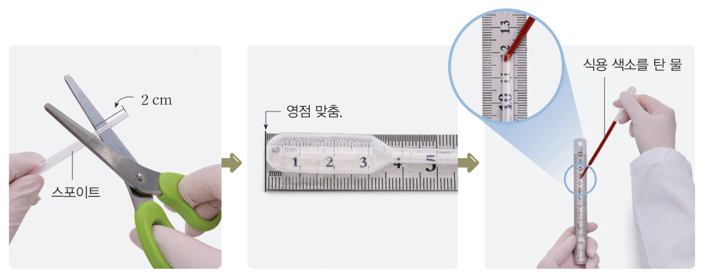
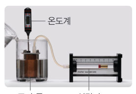
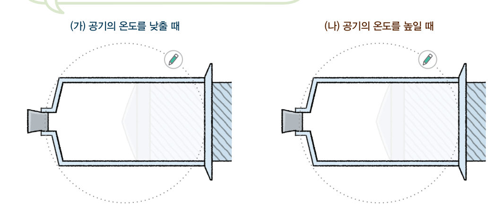
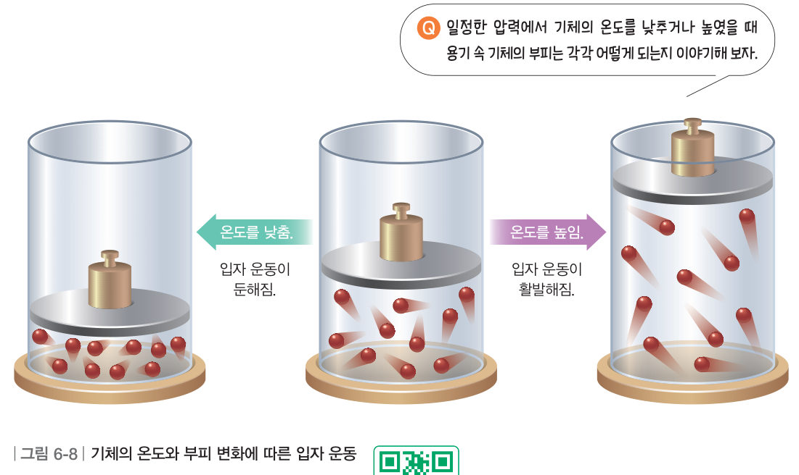
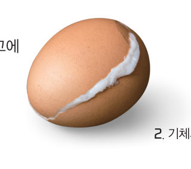

살아있는 교과서 · Ⅵ. 기체의 성질 · 2. 기체의 압력 및 온도와 부피 관계 · 02 210~213쪽
기체의 온도와 부피 관계
“냉장고에 들어왔더니 시원해서 잠이 온다.” “어, 언제 내 몸이 이렇게 찌그러졌지?” 냉장고에 넣어 둔 생수병은 왜 찌그러졌을까? 가상 스포이트를 온도가 다른 물에 넣어 보고, 입자의 운동으로 그 까닭을 설명해 보자.
🎯 이 단원을 배우면 — 기체의 온도와 부피 관계를 실험으로 알아내고, 입자 운동으로 설명할 수 있다.
탐구기체의 온도와 부피 관계를 실험으로 알아보기 210~211쪽
기체의 온도와 부피는 어떤 관계일까?
더운 여름에 물이 조금 들어 있는 생수병을 냉장고에 넣어 두면 생수병이 찌그러진 것을 볼 수 있다. 이것은 온도가 생수병 속 기체의 부피에 영향을 미치기 때문이다.

210쪽과정 1~2 — 스포이트 끝을 2 cm 잘라 자의 영점에 맞추고, 식용 색소를 탄 물을 1 방울 넣는다.
준비물 찬물, 뜨거운 물, 식용 색소, 1 mL 스포이트, 온도계, 250 mL 비커 4 개, 가위, 자, 셀로판테이프, 보안경, 내열 장갑, 실험용 장갑, 실험복
스포이트의 뾰족한 부분을 2 cm 정도 잘라 내고 둥근 부분 끝을 자의 영점에 맞춘 다음, 셀로판테이프로 스포이트를 자에 붙인다.
다른 스포이트로 식용 색소를 탄 물을 1 방울 넣는다.
찬물과 뜨거운 물을 섞어 온도가 다른 물을 4 개 만들고 비커에 각각 150 mL씩 넣는다.
측정 온도계와 스포이트를 온도가 낮은 물이 담긴 비커부터 차례대로 넣으며 물의 온도와 물방울의 위치를 측정하여 표에 기록한다.
⚠️ 유리 기구가 깨지지 않게 조심하고, 뜨거운 물에 화상을 입지 않도록 주의한다.
211쪽온도계와 자에 붙인 스포이트
가상 실험가상 비커 4 개와 스포이트
비커 네 개의 물 온도를 정한 뒤, 비커를 하나씩 눌러 스포이트를 넣어 보자. 물방울이 멈추면 물방울의 맨 아래쪽을 기준으로 위치가 기록표에 적혀요. (활동 도우미 — 물방울의 위치는 맨 아래쪽을 기준으로 측정한다.)
1물의 온도와 물방울의 위치로 알 수 있는 것은 각각 무엇일까? 물의 온도 → , 물방울의 위치 →
2정리해 볼까 온도가 높아지면 스포이트 속 공기의 부피는 . 그래프는 오른쪽 이다.
3결과 해석 및 결론 도출 실험 결과를 바탕으로 기체의 온도와 부피 관계를 이야기해 보자.
다르게 해 보기 · 기체의 온도와 부피 관계 알아보기

구리 통 · 실린더 · 온도계
① 공기가 들어 있는 구리 통과 실린더를 고무관으로 연결한다. ② 구리 통에 온도계를 꽂고 찬물이 담긴 비커에 넣는다. ③ 비커에 뜨거운 물을 조금씩 부으면서 구리 통 속 공기의 온도와 실린더 속 공기의 부피를 측정한다. 정리 기체의 온도와 부피 관계를 이야기해 보자.
교과서온도가 높아지면 부피가 늘어난다 212쪽
그림 6-7헬륨 풍선의 부피 변화
일정한 양의 기체는 압력이 일정할 때 온도가 높아지면 부피가 늘어나고, 온도가 낮아지면 부피가 줄어든다. 예를 들어 겨울철 실외에서 들고 다니는 헬륨 풍선은 공기의 온도가 낮아 팽팽하지 않다. 하지만 따뜻한 실내로 들어오면 공기의 온도가 높아져 헬륨 풍선의 부피가 늘어나기 때문에 그림 6-7과 같이 풍선이 팽팽해지는 것을 볼 수 있다.
더 알아보기 · 기체의 온도와 부피 관계를 알아낸 샤를 샤를(Charles, J.A.C., 1746~1823)은 1780 년대에 열기구에 관한 연구를 진행했다. 수소, 산소, 질소 등 다양한 기체를 가지고 풍선 실험을 했는데, 풍선에 같은 부피만큼 기체를 채우고 온도를 높이면 기체의 종류와 상관없이 같은 비율로 부피가 커진다는 것을 알아냈다.
해 보기기체의 온도와 부피 관계를 입자 모형으로 알아보기 212쪽

212쪽일정한 압력에서 주사기 속 공기 — (가) 온도를 낮출 때 · (나) 온도를 높일 때
고려할 점 — 입자의 개수는 어떻게 될까? 입자의 운동성을 어떻게 표현할까? 아래 주사기를 얼음물이나 뜨거운 물에 담가 보자. 주사기는 마개로 막혀 있고 피스톤은 자유롭게 움직여요(압력 일정).
(가) 공기의 온도를 낮출 때
(나) 공기의 온도를 높일 때
입자의 개수
입자의 운동
공기의 부피
✔기체의 온도와 부피 관계를 입자 모형으로 이야기해 보자.
교과서온도와 부피 관계를 입자 운동으로 설명하기 213쪽
기체의 온도와 부피 관계는 입자 운동으로 설명할 수 있다. 용기에 들어 있는 일정한 양의 기체는 일정한 압력에서 온도를 낮추면 그림 6-8과 같이 입자 수는 변하지 않는다. 하지만 입자가 둔하게 운동하여 용기 벽에 약하게 충돌하므로 기체의 부피가 줄어든다. 반대로 용기 속 기체의 온도를 높이면 입자 수는 변하지 않지만 입자가 활발하게 운동하여 용기 벽에 강하게 충돌하므로 기체의 부피가 늘어난다. 이와 같이 기체는 압력이 일정할 때 온도가 변하면 입자의 운동성이 달라져 기체의 부피가 변한다.

그림 6-8기체의 온도와 부피 변화에 따른 입자 운동
가상 실험움직이는 그림 6-8 — 실린더 데우고 식히기
피스톤 위의 추는 그대로(압력 일정)예요. 온도를 바꾸면 입자의 빠르기와 피스톤의 높이가 어떻게 변하는지 보자. 입자의 꼬리가 길수록 빠르게 운동하는 거예요.
🔍 인터넷 검색 에듀넷 티-클리어(www.edunet.net)에서 ‘기체의 온도와 부피’를 검색하면 기체의 온도에 따른 부피 변화를 입자 운동으로 확인할 수 있다.
1온도를 높일 때 달라지는 것을 모두 골라 보자.
스스로 확인하기210쪽 학습 목표를 달성했는지 확인해 보자 213쪽
1개념 확인 일정한 양의 기체는 압력이 일정할 때 온도가 높아지면 부피가 ( ), 온도가 낮아지면 부피가 ( ).

삶은 달걀
2사고력 달걀은 오래될수록 달걀 안쪽에 있는 공기 주머니가 커진다. 냉장고에 오랫동안 넣어 둔 달걀을 삶으면 달걀 껍데기가 터지는 까닭을 설명해 보자.
🧩 두 번째 블록 · 힌트 조각 1 (213쪽)
물 뿜는 인형을 뜨거운 물에 넣으면 인형 속 공기의 부피가 ( ), 다시 찬물에 넣으면 공기의 부피가 ( ). → 다음 조각은 ‘기체의 부피 변화 예 조사하기’에서!
5분 테스트기체의 온도와 부피 관계
1질소 기체가 들어 있는 과자 봉지에 뜨거운 바람을 불어 주면 과자 봉지의 부피가 . 이 과자 봉지를 공기 중에 두면 과자 봉지의 부피가 . 찌그러진 탁구공을 뜨거운 물에 넣으면 탁구공 속 기체의 압력이 .
2용기에 들어 있는 일정한 양의 기체는 일정한 압력에서 온도를 높이면 기체 입자가 하게 운동하여 용기의 안쪽 벽에 강하게 충돌하므로 기체의 부피가 .
3그림 6-8에서 가운데 상태를 기준으로 ① 왼쪽(부피가 줄어든 상태), ② 오른쪽(부피가 늘어난 상태)이라고 할 때 ①에서 기체의 온도는 지고, ②에서 기체의 온도는 진다. ①에서 기체 입자의 운동은 . ②에서 기체 입자는 용기 벽에 충돌한다. ②에서 기체의 부피가 증가하는 까닭은 기체 입자의 움직임이 때문이다.
4오줌싸개 인형에 뜨거운 물을 붓는 경우, 옳으면 O, 옳지 않으면 X를 골라 보자.
⑨ 오줌싸개 인형에 뜨거운 물을 부으면 인형 속 공기의 부피가 늘어난다.
⑩ 오줌싸개 인형에 뜨거운 물을 부으면 인형 속 기체 입자가 활발하게 운동한다.
스스로 정리하기압력이 일정할 때 기체의 온도와 부피 관계 216쪽
2압력이 일정할 때 기체의 온도와 부피 관계
(1) 기체의 온도를 낮추면 기체의 부피가 . (입자 운동이 둔해짐.) (2) 기체의 온도를 높이면 기체의 부피가 . (입자 운동이 활발해짐.)
제출학생 정보 · 제출하기
모든 활동을 마친 뒤 제출하면 전체가 한 번에 채점되고 피드백이 나타나요. 답안은 선생님 스프레드시트(중1 탭)에 기록돼요.